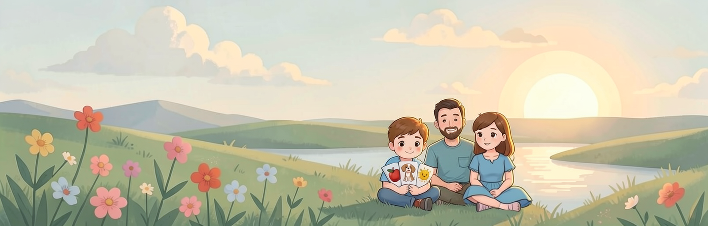

Как заниматься

Несколько простых правил, чтобы занятия приносили радость и пользу. Темп у каждого свой – ориентируйтесь на ребёнка.
Общие правила
- Занимайтесь вместе. Первое время рядом должен быть взрослый: родитель, педагог или специалист. Он показывает, подсказывает, радуется успехам.
- Занятия короткие. 10–15 минут. Лучше заниматься регулярно и понемногу, чем долго и редко.
- Спокойная обстановка. Выключите телевизор, уберите лишние отвлекающие предметы, включите звук на устройстве.
- Хвалите. Отмечайте каждый успех, даже маленький. Ошибка не страшна: спокойно вернитесь к заданию.
- Не торопите. Если ребёнок устал или потерял интерес, закончите занятие и вернитесь к нему позже.
- Повторяйте. Новое закрепляется через повторы. Возвращайтесь к пройденным словам и историям.
С чего начать
Рекомендуемый порядок: Слова → Угадай слово → Истории. Игры «Цвета», «Эмоции» и «Строим» можно добавлять в любой момент, чтобы разнообразить занятие.
Слова
Берите один набор из 8 слов. Покажите картинку, произнесите слово, дайте послушать голос в приложении и предложите повторить. Не требуйте точного произношения: важно, что ребёнок пробует. Через несколько занятий вернитесь к этому же набору.
Угадай слово
Начинайте, когда слова уже знакомы. Пусть ребёнок сам нажимает на картинку. Если ошибся, не говорите «неправильно»: вернитесь к карточке в разделе «Слова» и повторите слово вместе.
Истории
Посмотрите и послушайте историю целиком, затем разберите по шагам: «Что мы делаем сначала? А потом?». Закрепите в жизни: помыли руки – вспомните шаги из истории. Хорошо смотреть историю заранее перед новой ситуацией, например перед походом в поликлинику.
Цвета, эмоции, строим
Это короткие игры на закрепление. Называйте цвета и эмоции вслух, обсуждайте, когда мы радуемся, грустим, сердимся. В играх «Строим» помогайте рукой, если фигура не встаёт на место, и постепенно увеличивайте число фигур в настройках.
Педагогам и специалистам
Заведите в приложении профиль на каждого ученика: у каждого свой прогресс. Подбирайте задания под возможности ученика и по результатам игр смотрите, какие слова даются легко, а какие нужно повторить.
Приложение не заменяет занятия со специалистом. Если сомневаетесь в подходе, посоветуйтесь с педагогом или специалистом, который работает с вашим ребёнком.